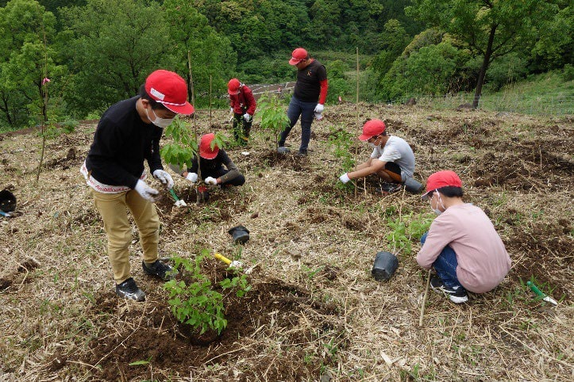
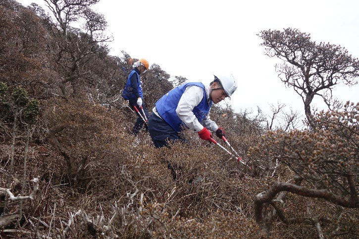
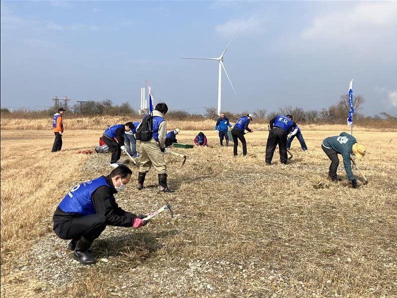
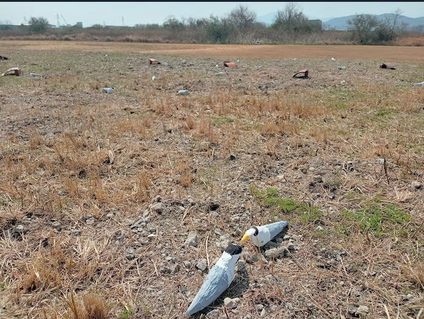

地域の自然資本を守り、次世代へつなぐ
～ネイチャーポジティブ経営と地域共生～
九州電力株式会社 北九州支店
九州電力株式会社 北九州支店
| 企業名 | 九州電力株式会社 |
|---|---|
| 業種 | 電気業 |
| 設立 | 1951年 |
| 所在地 | 福岡県福岡市中央区渡辺通（北九州支店：福岡県北九州市小倉北区米町） |
響灘ビオトープでのコアジサシ保全から始まる地域共生モデルの創出
北九州ネイチャーポジティブネットワークでは、企業の多様な取り組みを紹介しています。事業と自然との関わりを見つめ直すきっかけを提供し、地域経済の活性化と生物多様性の保全を両立する「ネイチャーポジティブ」の実現を目指しています。
今回は、ネットワーク参画企業である九州電力株式会社（以下 「九州電力」）北九州支店による響灘ビオトープでの生物多様性保全活動や地域共生活動の取り組みをご紹介します。
九州電力グループは、「カーボンマイナスへの挑戦」を経営の最重要課題（マテリアリティ）の一つに掲げ、２０５０年よりできるだけ早期に温室効果ガス排出量の実質削減を進めることで、吸収量が排出量を上回る「カーボンマイナス」の実現を目指しています。電力供給という社会インフラを支える一方で、事業活動が環境に及ぼす影響を真摯に受け止め、長年にわたりCO2削減や森林整備による生物多様性の保全・管理に注力してきました。そのため、環境対策に取り組むことが「当たり前」であるという認識が深く根付いています。
九州電力は、九州内に約4,447 haの社有林を保有・管理しているほか、2001年度から10年間で100万本の植樹を地域と一緒になって行う「九州ふるさとの森づくり」も展開してきました。さらには、大分県の平治岳周辺の社有林が国の「自然共生サイト」に認定されるなど、企業主体による生物多様性の保全活動を積極的に推進しています。また、2016年に設立された「公益財団法人九電みらい財団」を通じて、環境保全活動や環境教育、植林事業、次世代育成支援事業（助成事業）を展開しています。


九州電力が行っている電気事業は、環境影響やCO2排出量が多いという特性を持っています。そのため、2050年カーボンマイナスの実現に向けた脱炭素の取り組みを積極的に展開してきました。単にCO2を出さない技術や、排出が少ない技術を導入するだけでなく、CO2の吸収源や水源となる社有林の保全・管理にも長年取り組んでおり、地域の生態系保全において大きな役割を担っています 。
九州電力は、広大な社有林を保有し、適切に保全・管理しています。その一部は「くじゅう九電の森」として環境教育等にも活用しています。また、大分県・平治岳周辺の社有林は国の「自然共生サイト」に認定される等、生物多様性の保全にも取り組んでいます。
九州電力北九州支店では、北九州市の重要な自然拠点である響灘ビオトープにおいて、環境省のレッドリストで絶滅危惧種IＢ類に指定されている渡り鳥「コアジサシ」の営巣地の保護・整備に取り組んでいます。2025年から始まったこの取り組みでは、砂れき地を好むコアジサシのために草が生い茂るのを防ぐ除草作業や、飛来を促す模型（デコイ）の作成・設置などを通して、営巣環境の維持・管理を推進しています 。響灘ビオトープと連携して地域の固有種の生息・生育環境を科学的・物理的に整えることで、地域の自然資本と生態系サービスの維持・回復に寄与しています 。
2026年に設立10周年を迎えた「九電みらい財団」を通じて、社有林等を活用した環境教育や、親子向けの環境教育イベントを開催しています。また、地域に根差した子どもたち向けの環境活動に取り組む団体に対して、活動費の助成も行っています。
九州電力では支店毎に独自の地域共生活動を行っており、北九州支店では、響灘ビオトープでの活動のほか、海岸清掃などにも継続して参加し、地域コミュニティーとの連携を深めています。こうした活動は、1回参加しただけでは目的を達成できません。だからこそ継続して参加することに意味があり、社内だけでなく地域住民とも共通の環境意識や理解を育むきっかけとなっています。この積み重ねが環境対策を「自分事」として捉える意識の醸成につながっています 。


九州電力北九州支店では、これまでの海岸清掃などの活動を継続しながら、2025年にスタートした響灘ビオトープでのコアジサシの営巣環境整備を、北九州のシンボリックな活動へ発展させていくことを目指しています。今後はさらに活動を継続・発展させるため、社内の若手人材の参画促進、他企業との交流・パートナーシップなどを柔軟に取り入れていく意向です。
九州電力は、本業と環境が直結しているからこそ、「ネイチャーポジティブ」という言葉が広まる前から、環境対策を実践してきました。その歩みは、「脱炭素（カーボンマイナス）」と「自然資本の回復（ネイチャーポジティブ）」を統合した先進的なモデルです。
単に広大な社有林を保全・管理するだけでなく、それを次世代の育成に「活用」している点や、地域コミュニティーと「顔の見える関係」を築いている点、さらには、環境活動を世代間や企業間の交流を促すメディアとして捉えている姿勢は 、これからのネイチャーポジティブ経営を目指す多くの企業にとって大きな示唆を与える事例と言えます 。
※取り組みに関心をお持ちの企業・団体の方は、北九州ネイチャーポジティブネットワーク事務局までお問い合わせください